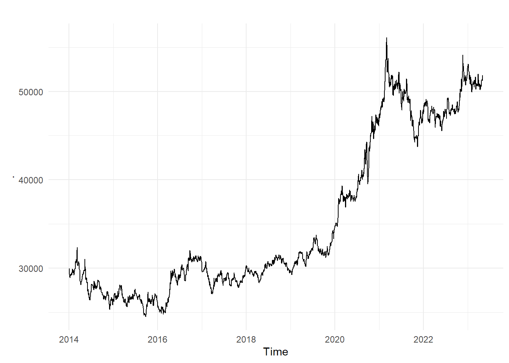
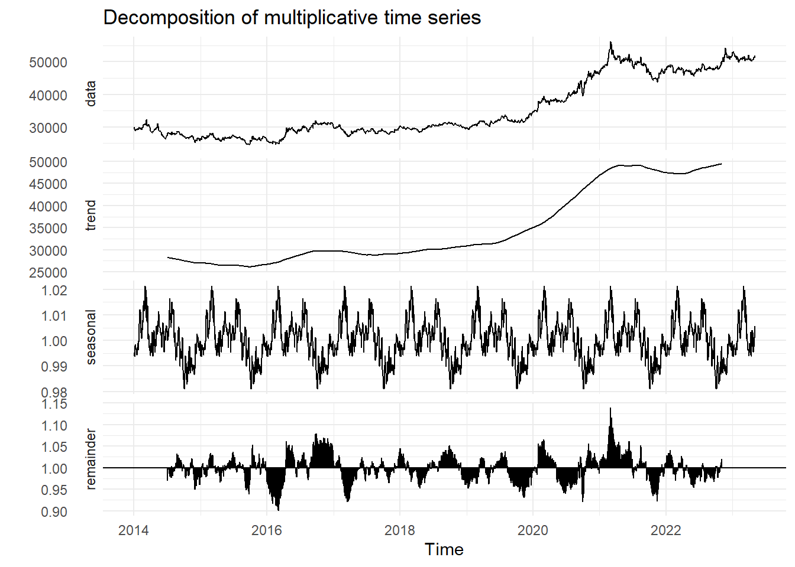
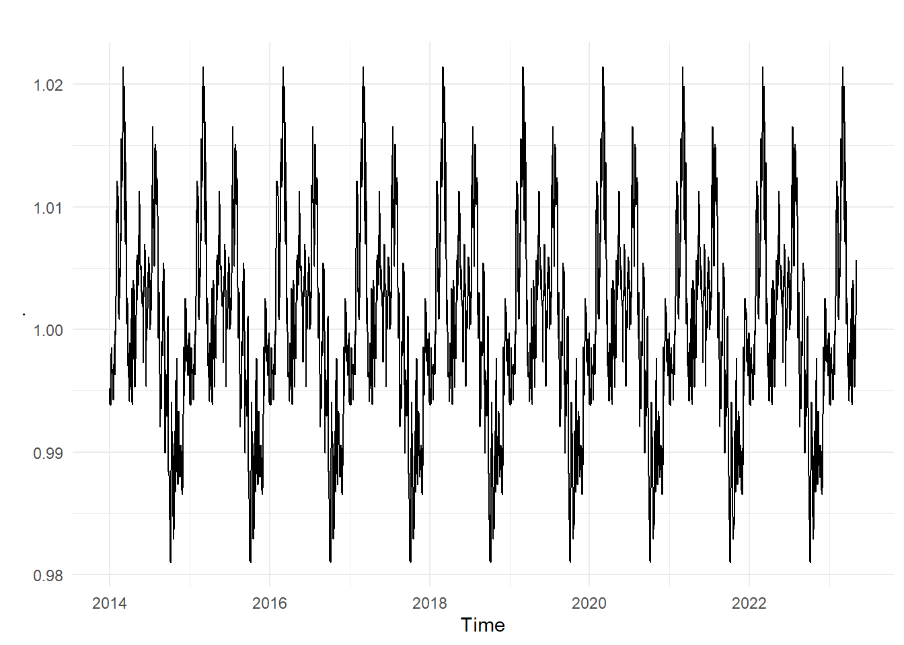
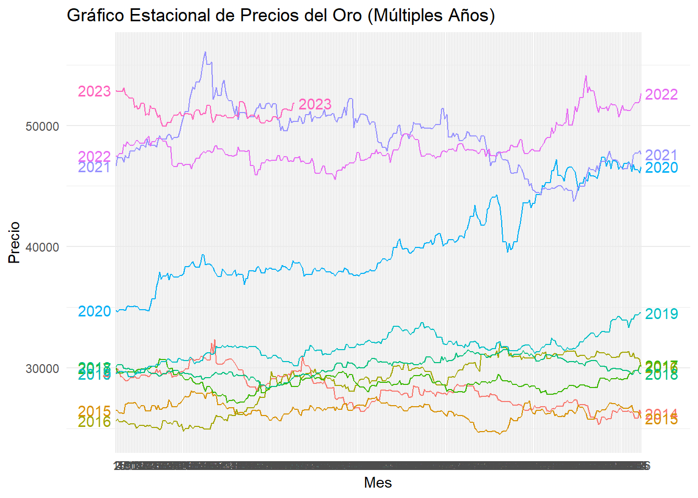

Capítulo 2 Propuesta Avance 2 & 3
2.2 Cargar la data del Data set
## Date Price Open High Low Volume Chg.
## 1 2014-01-01 29542 29435 29598 29340 2930 0.25
## 2 2014-01-02 29975 29678 30050 29678 3140 1.47
## 3 2014-01-03 29727 30031 30125 29539 3050 -0.83
## 4 2014-01-04 29279 29279 29279 29279 0 -1.51
## 5 2014-01-06 29119 29300 29395 29051 24380 -0.55
## 6 2014-01-07 28959 29130 29195 28912 18710 -0.552.3 Limpieza de Datos
## 'data.frame': 2227 obs. of 7 variables:
## $ Date : chr "2014-01-01" "2014-01-02" "2014-01-03" "2014-01-04" ...
## $ Price : int 29542 29975 29727 29279 29119 28959 28934 28997 29169 29312 ...
## $ Open : int 29435 29678 30031 29279 29300 29130 28916 28990 29030 29170 ...
## $ High : int 29598 30050 30125 29279 29395 29195 29029 29053 29198 29330 ...
## $ Low : int 29340 29678 29539 29279 29051 28912 28820 28865 28960 29133 ...
## $ Volume: int 2930 3140 3050 0 24380 18710 18140 15130 15810 13780 ...
## $ Chg. : num 0.25 1.47 -0.83 -1.51 -0.55 -0.55 -0.09 0.22 0.59 0.49 ...Se ajusta la columna “Date” está en tipo “character”, por lo tanto toca convertir esta en formato de Tiempo
## 'data.frame': 2227 obs. of 7 variables:
## $ Date : Date, format: "2014-01-01" "2014-01-02" ...
## $ Price : int 29542 29975 29727 29279 29119 28959 28934 28997 29169 29312 ...
## $ Open : int 29435 29678 30031 29279 29300 29130 28916 28990 29030 29170 ...
## $ High : int 29598 30050 30125 29279 29395 29195 29029 29053 29198 29330 ...
## $ Low : int 29340 29678 29539 29279 29051 28912 28820 28865 28960 29133 ...
## $ Volume: int 2930 3140 3050 0 24380 18710 18140 15130 15810 13780 ...
## $ Chg. : num 0.25 1.47 -0.83 -1.51 -0.55 -0.55 -0.09 0.22 0.59 0.49 ...Se identifica que Todas las columnas se encuentran en el tipo correcto.
2.4 Padding & imputation
Si observamos la data solo comprende fechas entre semana, pero en series de tiempo deberíamos tener la data mas completa en la medida de lo posible.
# Padding
data <- data %>%
pad(interval = "day")
suppressWarnings({
# Imputar NA values con la última observación
data_clean <- data %>% na.locf()
})
head(data_clean)## Date Price Open High Low Volume Chg.
## 1 2014-01-01 29542 29435 29598 29340 2930 0.25
## 2 2014-01-02 29975 29678 30050 29678 3140 1.47
## 3 2014-01-03 29727 30031 30125 29539 3050 -0.83
## 4 2014-01-04 29279 29279 29279 29279 0 -1.51
## 5 2014-01-05 29279 29279 29279 29279 0 -1.51
## 6 2014-01-06 29119 29300 29395 29051 24380 -0.552.5 Exploración de la data
Para explorar la data debemos primero crear el objeto de serie de tiempo
# ts
data_ts <- ts(data = data_clean$Price, start = 2014, frequency = 7*4*12)
data_ts %>%
autoplot() Se observa un comportamiento INCREMENTAL a traves del tiempo y adicionalmente se podria inferir un modelo multiplicativo
# Calcular el promedio móvil
promedio_movil <- ma(data_ts, order = 12)
autoplot(data_ts) + ggtitle("Serie de Tiempo") +
autolayer(promedio_movil, series = "Promedio Móvil")## Warning: Removed 12 rows containing missing values or values outside the scale range
## (`geom_line()`).Se observa que el promedio móvil sigue de cerca la serie temporal, lo que sugiere una presencia limitada de ruido en los datos y una tendencia clara en su evolución.
2.6 Descomposición de la Serie Temporal
Se realiza la descomposición de la serie temporal en sus componentes de tendencia, estacionalidad y residuos

Se evidencia claramente una tendencia lineal en los datos, acompañada de un patrón de estacionalidad adicional.
2.7 Análisis de estacionalidad

Después de la visualización del componente estacional de la serie temporal, se procederá a analizar y validar un posible patrón en los precios del oro entre los años 2014 y 2023. Este análisis ayudará a comprender mejor la naturaleza de la estacionalidad presente en los datos a lo largo de este período
ggseasonplot(data_ts, year.labels = TRUE, year.labels.left = TRUE) +
labs(title = "Gráfico Estacional de Precios del Oro (Múltiples Años)",
x = "Mes",
y = "Precio") +
theme_minimal()
Se observa un patrón recurrente en los precios, con picos y valles que parecen repetirse cada año. Se identifica una trendencia incremental constante del periodo 2019 al 2022 principalmente
Alicamos La prueba de Dickey-Fuller Aumentada (ADF) para determinar si una serie temporal es estacionaria o no.
##
## Augmented Dickey-Fuller Test
##
## data: data_ts
## Dickey-Fuller = -2.1155, Lag order = 14, p-value = 0.5294
## alternative hypothesis: stationaryLa prueba de Dickey-Fuller aumentada (ADF) identifica que la serie temporal no es estacionaria. Esto se basa en el estadístico de prueba (-2.1155) y el valor p (0.5294). Dado que el valor p es mayor que el nivel de significancia típico de 0.05, no hay suficiente evidencia para rechazar la hipótesis nula de no estacionariedad.
Dado que la serie no es estacionaria según la prueba ADF, Proceedemos con la diferenciación
2.8 Análisis de Diferenciación
Se realiza un analisis comparativo de los meses identificando el comportamiento
data_clean %>%
mutate(Month = month(Date, label = T)) %>%
mutate(seasons = data_decompose$seasonal) %>%
group_by(Month) %>%
summarise(total = sum(seasons)) %>%
ggplot(aes(Month, total)) +
geom_col()+
theme_minimal()El análisis de la estacionalidad mensual revela patrones en los precios del oro a lo largo del año. Se observa que estos son más altos durante enero a julio, mientras que disminuyen de agosto a diciembre
# Diferenciación de la serie temporal
diff_data_ts <- diff(data_ts)
autoplot(diff_data_ts) +
labs(title = "Serie Diferenciada",
y = "Diferencia",
x = "Tiempo")Con este grafico observamos parecen más amplias entre sí durante el año 2020 y 2021, lo que indica cambios significativos en el comportamiento de la serie durante ese año
Continuamos el análisis al representar tanto la serie temporal original como la serie diferenciada en un único gráfico.
# Diferenciación de la serie temporal
diff_data_ts <- diff(data_ts)
par(mfrow=c(2,1))
plot(data_ts, main="Serie Original", ylab="Valor", xlab="Tiempo")
plot(diff_data_ts, main="Serie Diferenciada", ylab="Diferencia", xlab="Tiempo") Esto nos permite comparar visualmente cómo cambian los datos después de aplicar la diferenciación.
Esto nos permite comparar visualmente cómo cambian los datos después de aplicar la diferenciación.
# Calcular la función de autocorrelación (ACF)
acf_diff <- acf(diff_data_ts, main = "Función de Autocorrelación (ACF) de la Serie Diferenciada")
# Calcular la función de autocorrelación parcial (PACF)
pacf_diff <- pacf(diff_data_ts, main = "Función de Autocorrelación Parcial (PACF) de la Serie Diferenciada")Los coeficientes de correlación fuera de estos límites son estadísticamente significativos. el limigte superio es de :0.0349826 y el inferior de: -0.0349826
suppressMessages({
# Prueba ADF en la serie diferenciada
adf_test_diff <- adf.test(diff_data_ts)
adf_test_diff
})## Warning in adf.test(diff_data_ts): p-value smaller than printed p-value##
## Augmented Dickey-Fuller Test
##
## data: diff_data_ts
## Dickey-Fuller = -15.347, Lag order = 14, p-value = 0.01
## alternative hypothesis: stationarySe aplico la prueba ADF en la serie diferenciada arrojó un estadístico de prueba de -15.347 y un valor p de 0.01. Estos resultados indican una evidencia que la serie temporal tiene una tendencia constante unitaria , lo que implica que la serie es estacionaria.
2.9 Transformación para Controlar la Tendencia y Variabilidad
# Transformación logarítmica
log_data_ts <- log(data_ts)
# Gráfico de la serie transformada
plot(log_data_ts, main="Serie Transformada (Logarítmica)", ylab="Valor Transformado", xlab="Tiempo")## Warning: package 'knitr' was built under R version 4.3.3# métricas antes de la transformación
cv_before <- sd(data_ts) / mean(data_ts) * 100
sd_before <- sd(data_ts)
iqr_before <- IQR(data_ts)
# Aplicar la transformación logarítmica
log_data_ts <- log(data_ts)
# métricas después de la transformación
cv_after <- sd(log_data_ts) / mean(log_data_ts) * 100
sd_after <- sd(log_data_ts)
iqr_after <- IQR(log_data_ts)
# Crear con los resultados
results <- data.frame(
Métrica = c("Coeficiente de Variación (CV)", "Desviación Estándar", "Rango Intercuartílico (IQR)"),
Antes_de_la_Transformación = c(cv_before, sd_before, iqr_before),
Después_de_la_Transformación = c(cv_after, sd_after, iqr_after)
)
# Imprimir
knitr::kable(results, caption = "Métricas antes y después de la transformación")| Métrica | Antes_de_la_Transformación | Después_de_la_Transformación |
|---|---|---|
| Coeficiente de Variación (CV) | 25.42391 | 2.2939376 |
| Desviación Estándar | 8961.58310 | 0.2394944 |
| Rango Intercuartílico (IQR) | 17332.00000 | 0.4742370 |
Antes de la transformación, el coeficiente de variación (CV) es 25.42, la desviación estándar es 8961.58 y el rango intercuartílico (IQR) es 17332. Después de la transformación, el CV se reduce significativamente a 2.29, la desviación estándar se reduce a 0.24 y el IQR se reduce a 0.47. Estas reducciones indican una disminución significativa en la variabilidad de la serie después de la transformación.
2.10 Justificación
- Prueba de Dickey-Fuller (ADF) estacionariedad :
Es importante evaluar la estacionariedad de la serie temporal antes de aplicar modelos de series temporales. La prueba ADF nos permite determinar si la serie es estacionaria o no, lo que influye en la selección y aplicación de modelos adecuados.
- Diferenciación de la Serie Temporal:
La diferenciación es un paso común para lograr la estacionariedad en series temporales no estacionarias. Eliminar tendencias y patrones no estacionarios permite aplicar modelos más simples y eficientes, adicionalmente mejorar la interpretabilidad de los resultados al eliminar tendencias y variaciones.
- la transformación:
La transformación se utilizo para estabilizar la varianza y controlar la tendencia en la serie temporal. Esto es importante para mejorar la interpretacion de los datos y facilitar la identificación de patrones temporales. Además, la reducción de la variabilidad puede hacer que la serie sea más predecible y fácil de modela..